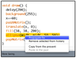

Contact Info
Mailing AddressUCB EECS, MC 1776
387 Soda Hall
Berkeley, CA 94720-1776
United States
<shiry at eecs dot berkeley dot edu>
Shiry Ginosar
I am a PhD student at the CS Department of the University of California Berkeley.
Previously I was a Visiting Scholar at the CS Department of Carnegie Mellon University, working with Professor Luis von Ahn in the field of Human Computation. More recently, I spent four years at Endeca as a Senior Software Engineer.
My research is supported by the U.S. National Science Foundation Graduate Research Fellowship and by a California Legislature Grant for graduate studies.
Publications
-

Editable Code Histories
An IDE extension that helps with the task of authoring multi-stage code examples by allowing the author to propagate changes (insertions, deletions and modifications) throughout multiple saved stages of their code.
Shiry Ginosar, Luis Fernando De Pombo, Maneesh Agrawala, Bjoern Hartmann, Authoring Multi-Stage Code Examples with Editable Code Histories, Proceedings, ACM symposium on User Interface Software and Technology, UIST 2013. (acceptance rate: 19%). PDF, video
-
Crowdsourced Data Analysis
A system that lets analysts use paid crowd workers to explore data sets and helps analysts interactively examine and build upon workers' insights.
Wesley Willett, Shiry Ginosar, Avital Steinitz, Bjoern Hartmann, Maneesh Agrawala, Identifying Redundancy and Exposing Provenance in Crowdsourced Data Analysis, IEEE Transactions on Visualization and Computer Graphics, 2013.
-

Phetch - A Human Computation Game
Phetch is an online game which collects natural language descriptions for images on the web as a side effect of game play. Can be used to improve the accessibility of the web as well as improve upon current image search engines.
Shiry Ginosar, Human Computation for HCIR Evaluation, Proceedings, HCIR 2007, pp. 40-42. PDF
Luis von Ahn, Shiry Ginosar, Mihir Kedia, Manuel Blum, Improving Image Search with Phetch, Proceedings, International Conference on Acoustics, Speech, and Signal Processing, ICASSP 2007. PDF
Luis von Ahn, Shiry Ginosar, Mihir Kedia, Ruoran Liu and Manuel Blum, Improving Accessibility of the Web with a Computer Game, Proceedings, ACM Conference on Human Factors in Computing Systems, CHI 2006, Montreal, Quebec, Canada, April 2006, pp. 79-82. Honorable mentioned paper and nominee for Best of CHI award. PDF